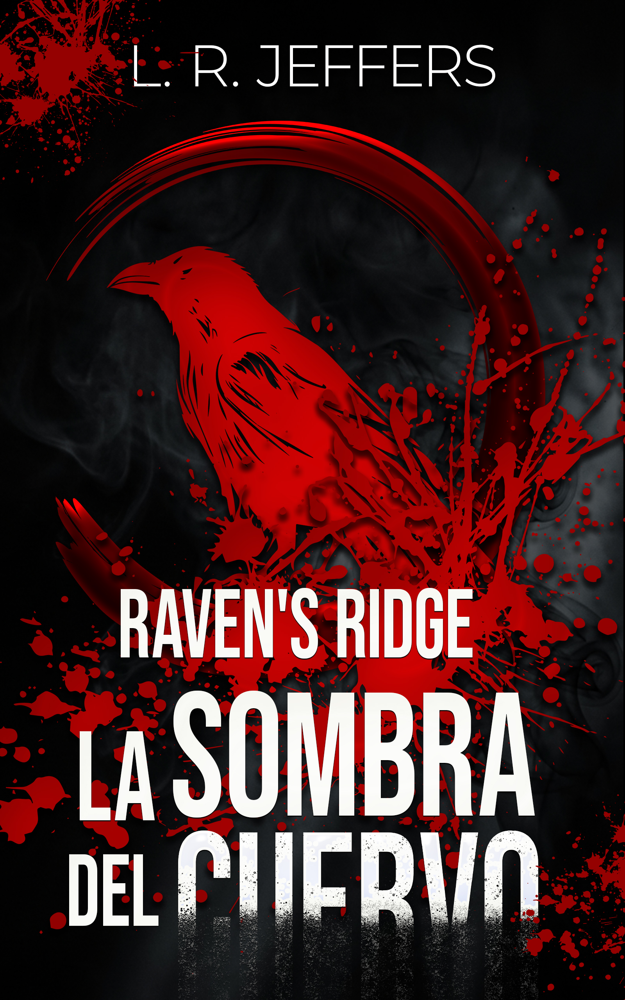

Raven's Ridge: La sombra del cuervo
«En las sombras de Raven's Ridge, los pecados del pasado exigen sangre.»
También disponible en Kindle Unlimited.
Sinopsis
En las sombras de Raven's Ridge, los pecados del pasado exigen sangre.
Drake Holloway es un fantasma. Como el hacker más buscado por el FBI bajo el alias Phantom, ha vivido años huyendo de un sistema que quiere destruirlo. Sin embargo, cuando la única persona que le importaba, Rowan Carver, aparece muerto en circunstancias rituales brutales, Drake sale de su escondite con un único objetivo: venganza.
Su investigación lo lleva a Killian Graves, el dueño del club nocturno KaЯon. Killian es el chivo expiatorio perfecto para la policía local: problemático, promiscuo y con el perfil ideal para cargar con las culpas de un pueblo supersticioso que teme a la leyenda de la Sacerdotisa de la Misericordia Vacía.
Drake sabe que Killian es inocente, pero también sabe que oculta secretos. Mientras NΩIR, su impredecible inteligencia artificial, vigila cada movimiento del atractivo dueño del bar, la línea entre el objetivo y la obsesión comienza a desdibujarse.
Para atrapar al verdadero monstruo, Drake tendrá que hacer lo impensable: confiar. No obstante, en un pueblo donde todos mienten, enamorarse del principal sospechoso podría ser su sentencia de muerte.
Aviso: Esta es la primera entrega de la bilogía «Crónicas de Raven's Ridge». La historia concluye en el siguiente volumen.
Leer extracto gratuito
Capítulo 1
Pasaron tres meses. Noventa días de silencio en los que se limitó a existir. El colchón del hotel parecía haberse amoldado a la forma de su cuerpo y el polvo se acumulaba en las esquinas con la mugre en la que habitaban los insectos. Cuando Drake se miró en el espejo, no pudo encontrar ningún rastro de la persona que solía ser: había bajado de peso, tenía la piel cenicienta y el azul de sus ojos era demasiado opaco. Se pasó la mano por el rostro; la barba áspera y descuidada le picó en los dedos. Sus pómulos sobresalían tanto que dolía tocarlos.
Parecía un cadáver. Por un momento, estuvo a punto de reírse de la idea; sin embargo, el recuerdo de Rowan le oprimió el corazón. ¿Cómo podía siquiera plantearse bromear al respecto cuando sus acciones lo condujeron al desastre? Si hubiera sido más cuidadoso, quizás…
«No debí permitirle llegar tan lejos», pensó. No estaba seguro de cuántas veces se lo había repetido a sí mismo; aunque sí de una cosa: debió ser él. No tenía nada a lo que regresar y nadie lo extrañaría si desapareciera. Rowan era distinto. Él dejó atrás a unos padres devastados y a tres hermanos; dejó a una gata obesa que perdía la batalla contra la depresión, un cactus olvidado y un pequeño rosedal.
Dos semanas después del incidente en Ashen Haven, consideró la posibilidad de contactar a la familia Carver para explicarles mejor lo sucedido. Supuso que saber que su hijo había muerto como un héroe podría ayudarlos, pero se detuvo; no solo porque expondría su ubicación, sino porque lo último que querrían oír era que había muerto apoyando a un grupo de desconocidos, quienes ni siquiera les enviaron una nota de condolencias.
Seguía sin saber cómo sentirse al respecto. Por lo que pudo averiguar, cada uno de ellos retomó su vida e ignoraron cualquier cosa que los relacionara con Rowan. Era como si… su libertad no se relacionara con él, como si su simple existencia resultara tan insignificante que no valiera la pena dedicarle ni un minuto para agradecerle.
En algún momento, en su nueva y amarga soledad, empezó a desear retroceder en el tiempo y no acercarse nunca a Ainsley MacAllister, sin importar el vínculo que los hubiera unido. De ignorarla, ¿las cosas tomarían otro rumbo? La cruda verdad era que, sin importar lo que se dijera, no tenía sentido. De cualquier forma, Cassidy Graves habría buscado a Rowan, lo habría arrastrado al desastre y él… habría muerto irremediablemente.
Drake cerró los ojos y lo vio ahí, sonriéndole en la oscuridad de su memoria, apretando el teléfono, prometiéndole que se encontrarían en Raven's Ridge. Había planeado tantas cosas para que compartieran, aunque solo tuvieran veinticuatro horas. Por el amor de Dios, ¡incluso pensó en tener una cena romántica frente al lago! Un detalle tan simple que le avergonzó proponérselo y, sin embargo, Rowan lo aceptó con ilusión.
«Porque elijo protegerte, a cualquier precio». Sus propias palabras continuaban torturándolo sin descanso, recordándole su inutilidad. Le había fallado, a la única persona que cerró los ojos y se abandonó en sus brazos incluso antes de ver su rostro. Que lo quiso cuando él no tenía nada y le ofreció el mundo a cambio. ¿Qué debía hacer ahora? ¿Cómo podía seguir adelante? No quería. La vida le resultaba demasiado dolorosa después de tantos golpes y pérdidas, pero rendirse habría sido un insulto a su sacrificio.
El teléfono que dejó abandonado sobre la deteriorada mesa, marcada por anillos de humedad y polvo, comenzó a sonar. En un principio, confundido por la falta de sueño y sus emociones desbordadas, no comprendió lo que pasaba. Nadie tenía su número, y si acaso alguien lo obtuviera, no podría contactarlo sin evadir… Recordó que no había abandonado el chat grupal de Raven's Ridge. Luego de tantos meses en silencio, ¿quién podría estar enviando mensajes? Por lo que recordaba, incluso terminaron discutiendo y culpándose unos a otros la última vez.
Movido por la curiosidad, lo tomó para revisarlo. Las notificaciones continuaban llegando sin detenerse, todas ellas con un mismo remitente. Cassidy Graves. Drake sintió de nuevo un rastro del antiguo disgusto que le provocaba y consideró abandonar el chat; sin embargo, el último de los mensajes lo detuvo. Era para él.
Drake resopló, burlándose con el pulgar suspendido sobre la pantalla, dispuesto a abandonar de una vez por todas el grupo. Ella no se equivocaba: pertenecía al reducido número de personas que mataría de poder. Si estuvieran encerrados juntos en una misma habitación en llamas, la lanzaría al fuego y la vería consumirse. Incluso se reiría de sus gritos.
Drake esbozó una sonrisa, tan despectiva como burlona. ¿No era acaso un poco hilarante? Que de entre todas las personas del mundo estuviera de acuerdo con Cassidy. De hecho, empezaba a agradarle un poco, solo un poco. Tenía que ser una broma.
Drake suspiró, debatiéndose entre intervenir o no. Si bien apreciaba la recién descubierta confianza de Cassidy hacia él, no sentía ningún apego por ella. Aun así, algo en sus palabras logró tocarle el alma —tal vez la amargura, tal vez la desesperación con las que se identificaba— y hacerlo reflexionar. Haría lo correcto una última vez.
«No por ella —pensó con dolor—. Roe me lo habría pedido. Es lo que él querría».
Tras enviar el mensaje, salió del grupo. No quedaba nada para él ahí.
💡 Este extracto también está disponible en la vista previa del libro en Amazon. Para continuar la historia, disponible en Amazon →
El fantasma de Dawn's Cradle
Drake Holloway no recuerda nada antes de los diez años. Ese vacío lo persigue como una sombra, y quizás por eso eligió llamarse Phantom.
Drake nació en Dawn's Cradle, un pueblo pequeño y aislado en los Apalaches. Su infancia es un rompecabezas incompleto: no tiene recuerdos antes de los diez años, como si alguien hubiera borrado las primeras páginas de su vida. Ese vacío lo convirtió en un hombre que necesita controlarlo todo, porque perder el control significa volver a ser ese niño impotente.
La primera persona que lo reconoció en su identidad fue Ainsley MacAllister, una pequeña que llegó al mismo orfanato y a la que acogió como su hermana. Ella lo llamó Drake, lo vio como él mismo, y esa validación se convirtió en un ancla. Desde entonces, su lealtad hacia Ainsley es absoluta. Pero la vida le enseñó pronto que el amor también puede doler: una adopción traumática, una madre abusiva, y la culpa de encontrarla muerta lo dejaron marcado con cicatrices físicas y emocionales.
Drake es serio, callado, obsesivo y metódico. Neurodivergente dentro del espectro autista, le cuesta comprender emociones ajenas, sarcasmos y dobles sentidos, por lo que compensa imitando. Muchos lo describían de niño como un «robot». Sin embargo, cuando siente conexión genuina, puede abrirse y mostrar un lado inesperadamente coqueto.
Su dureza es una coraza; debajo hay un niño que nunca fue cuidado. Su manipulación no nace de maldad pura, sino del miedo a perder lo poco que tiene.
El dueño de la noche en KaЯon

Entre excesos y sarcasmos, Killian Graves aprendió a sobrevivir en un mundo que lo dejó atrás. En Raven's Ridge, su rebeldía esconde un corazón marcado por cicatrices invisibles.
Killian nació en Raven's Ridge, un pueblo pequeño en las Montañas Blue Ridge. Desde niño conoció el abandono: un padre que lo rechazó físicamente, una madre que lo dejó por otro hombre, abuelos que le cerraron la puerta. Esa herida lo acompañó siempre, tan profunda que lo llevó a intentar quitarse la vida en la infancia. Sobrevivir lo convirtió en alguien que se aferra con uñas y dientes a lo que ama.
Su hermana menor, Cassidy, se convirtió en su razón de existir. Criarla solo le dio propósito, y protegerla se volvió su salvación. Con el tiempo, Killian levantó su propio refugio: el club alternativo KaЯon, un espacio gótico donde la oscuridad se mezcla con la sensualidad y lo prohibido.
Killian se muestra desafiante, rebelde y sarcástico. Prefiere herir primero antes de ser herido. Pero bajo esa fachada hay un hombre introspectivo, sentimental y sediento de un amor del que huye. Su hipervigilancia emocional lo hace medir constantemente si lo van a dejar, si lo van a traicionar.
🎧 Escucha la Playlist de Crónicas de Raven's Ridge en SpotifyContenido exclusivo para lectores de la web y suscriptores de Patreon.